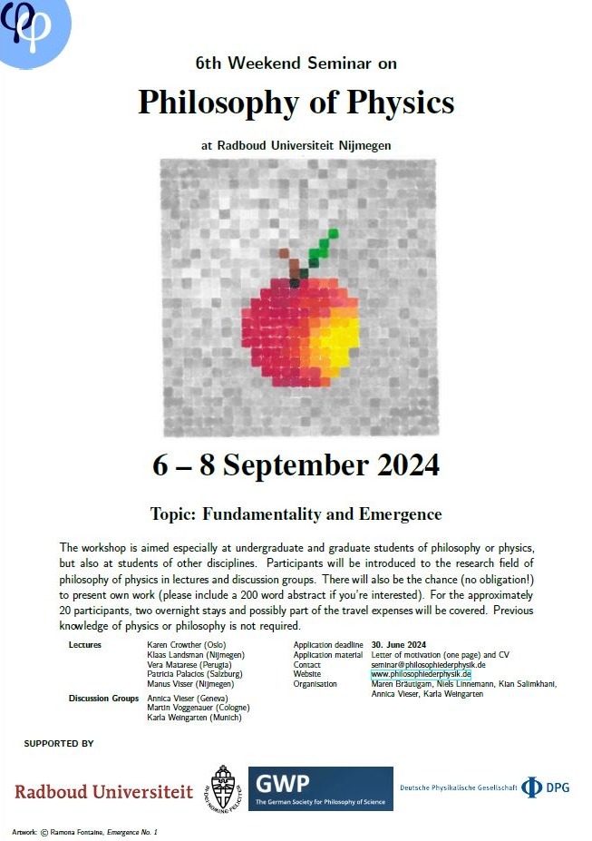
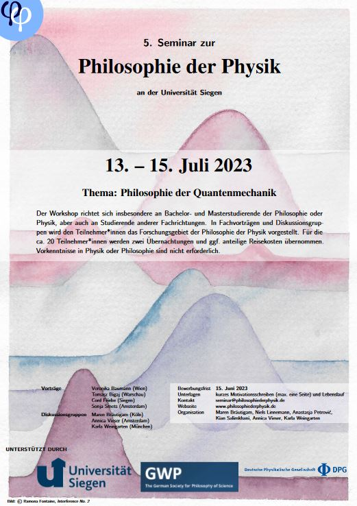
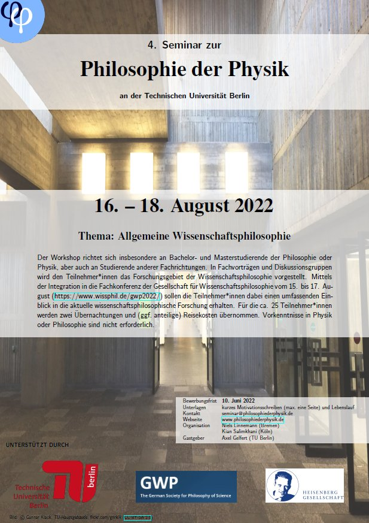
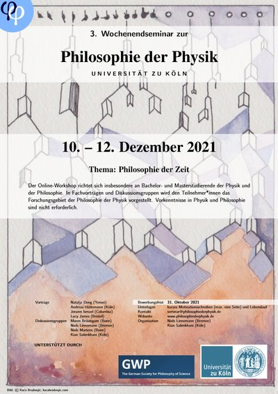

Alle Ausgaben
8 Seminare seit 2018
Die Wochenendseminare richten sich insbesondere an Bachelor- und Masterstudierende der Physik und der Philosophie. Vorkenntnisse sind nicht erforderlich. Für Teilnehmer*innen werden Unterkunft und (anteilige) Reisekosten übernommen.

8. Seminar
Physik und Information
Mit Vorträgen von Saakshi Dulani (Johns Hopkins), Chris Timpson (Oxford), Javier Anta (Sevilla) und Benjamin Jantzen (Virginia Tech).

7. Seminar (GWP-Satellit)
Allgemeine Wissenschaftsphilosophie
Satellitenworkshop bei der GWP.2025, mit Lina Jansson und Andreas Hüttemann.

6. Seminar
Fundamentality and Emergence
Internationale Ausgabe in englischer Sprache. Mit Karen Crowther (Oslo), Klaas Landsman (Nijmegen), Vera Matarese (Perugia) u.a.

5. Seminar
Philosophie der Quantenmechanik II
Zu den Themen Ununterscheidbarkeit, Quantenlogik und Interpretationen. Mit Veronika Baumann, Tomasz Bigaj und Sonja Smets.

4. Seminar (GWP-Satellit)
Allgemeine Wissenschaftsphilosophie
Integriert in die GWP-Konferenz. Mit Diskussionsgruppen zu Wissenschaft & Werte, Realismus & Modelle und Erklärung.

3. Seminar
Philosophie der Zeit
Mit Natalja Deng (Yonsei), Andreas Hüttemann (Köln), Jenann Ismael (Columbia) und Lucy James (Bristol). Online.

2. Seminar
Philosophie der Quantenmechanik
Mit Vanessa Seifert (Bristol), Manfred Stöckler (Bremen), Marij van Strien (Wuppertal) und Stefan Wolf (Lugano). Online (Covid-19).

1. Seminar
Philosophie der Raumzeit
Das erste Wochenendseminar mit Andreas Bartels, Radin Dardashti, Dennis Lehmkuhl und Carina Prunkl. ~45 Teilnehmer*innen.